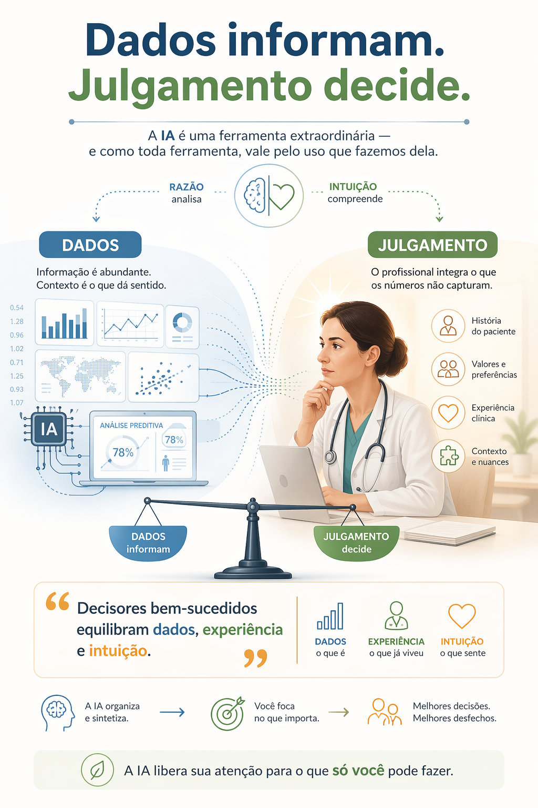
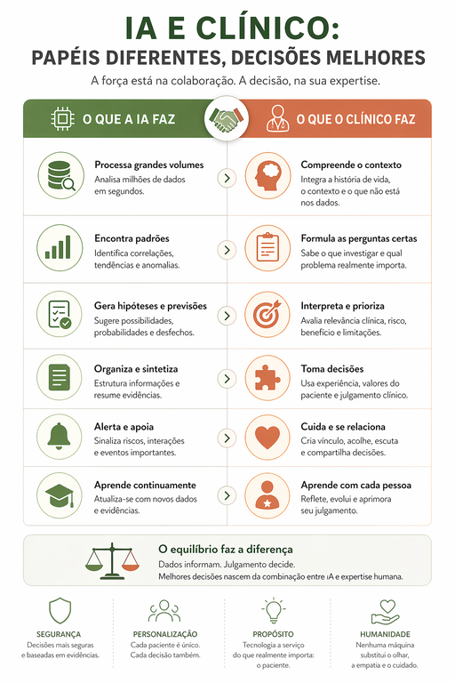
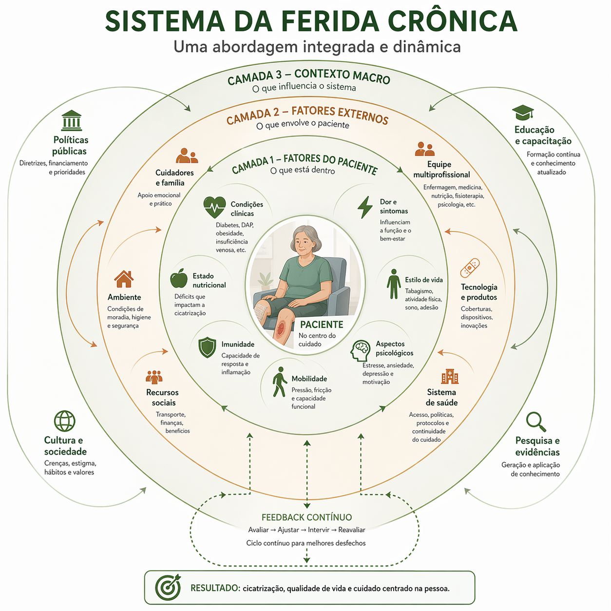

Vivemos afogados em dados — e com fome de julgamento
Uma ferida crônica gera registros fotográficos, medidas de área, índices de exsudato, histórico glicêmico, scores de dor. Hoje, algoritmos classificam tudo isso em segundos. Sistemas de IA detectam sinais de infecção antes que o olho humano perceba a mudança de cor. Isso é extraordinário.
E ainda assim — algo escapa.
O paciente que chega quieto demais. A ferida que "melhorou nos números" mas que algo no cheiro, na textura, na expressão do cuidador diz que não está bem. A decisão de desbridar agora ou esperar 48 horas — uma escolha que nenhum dashboard fará por você.
"O desafio no mundo de hoje não é a falta de informação, mas o julgamento para usá-la."
— Frank, Magnone & Netzer, Decisions Over Decimals (2022)Dados confortam com a ilusão de certeza — mas raramente contam a história completa. E quando se trata de feridas crônicas, revisões sistemáticas mostram que grande parte das decisões terapêuticas ainda depende, em última instância, da experiência e do julgamento do profissional.
A máquina processa. O profissional compreende.

A IA é excelente para…
Reconhecer padrões em imagens, cruzar grandes volumes de dados, sugerir protocolos baseados em evidência, alertar desvios em tempo real e antecipar riscos com base em histórico.
A IA não consegue…
Sentir o contexto do paciente, integrar o que não foi dito, ajustar a decisão ao que não está no prontuário, perceber propriedades emergentes do sistema de cuidado — e jamais terá intuição construída pela experiência vivida.
O maior perigo não é a IA errar — é o profissional parar de pensar porque a IA disse algo. Dependência acrítica de sistemas automatizados é a armadilha que a formação em saúde precisa combater ativamente.
Intuição é experiência acelerada
Quando um enfermeiro experiente entra num quarto e sente que algo não está certo — antes de olhar qualquer monitor — isso não é misticismo. É o reconhecimento ultrarrápido de padrões acumulados em centenas de situações semelhantes. A pesquisadora Patricia Benner (1984) descrevia: no processo de decisão por intuição, a escolha emerge de um julgamento que — embora não seja linear — está diretamente relacionado ao grau de experiência clínica.

Um exemplo concreto de ferida crônica
Dois pacientes com úlcera venosa idêntica nas métricas. A IA recomenda o mesmo protocolo. Mas o enfermeiro percebe que o Paciente A chegou hoje cabisbaixo, a cuidadora estava tensa, havia algo diferente no odor. Nenhum desses dados está no sistema. A decisão — intensificar monitoramento, acionar assistência social, antecipar retorno — nasce de uma leitura que não cabe em nenhum campo de formulário.
"Falhamos mais quando resolvemos o problema errado do que quando erramos a solução do problema certo."
— Russell Ackoff — citado em Decisions Over DecimalsPensar o sistema: a ferida que a IA nunca vê inteira
Há uma competência que vai além da intuição e além do dado — e que está no coração do trabalho do G10: a capacidade de enxergar o sistema. Não a ferida isolada. Não o protocolo isolado. O paciente inserido numa rede de relações, contextos, fluxos de informação e mecanismos de retroalimentação que determinam se a cicatrização vai acontecer ou não.
Pensamento sistêmico não é "pensar grande" nem holismo vago. Como definido nos materiais do próprio G10, adaptados de Gareth Morgan e Donella Meadows: é a abordagem que busca compreender fenômenos a partir das relações, estruturas e padrões de organização do todo — e não apenas pelo comportamento isolado de suas partes. Ela inicia na análise, mas não para nela.

Os pilares na prática clínica
-
1
Contexto antes da parteNenhuma ferida faz sentido fora do sistema ao qual pertence. Glicemia descontrolada, isolamento social, cuidador sobrecarregado — são parte do sistema que decide se a ferida fecha.
-
2
Relações antes de objetosImporta mais como os elementos interagem do que o que eles são. A relação entre enfermeiro, paciente e cuidador é frequentemente mais preditiva do desfecho do que qualquer métrica isolada.
-
3
Estrutura gera padrões — eventos são sintomas"Por que a ferida desse paciente nunca fecha?" raramente tem resposta no evento (o curativo errado). A resposta está na estrutura: o sistema de cuidado que produz aquele resultado repetidamente.
-
4
Feedback e não linearidadeCausa e efeito raramente são proporcionais ou imediatos. Uma pequena mudança no suporte familiar pode ter efeito maior na cicatrização do que qualquer ajuste técnico no protocolo.
-
5
Emergência: a função não está no elementoA cicatrização não está no curativo. Está na organização do sistema de cuidado. Restaurar condições — não forçar partes — é a lógica biomimética que o G10 aplica à clínica.
"A complexidade não vem do tamanho — vem da organização."
A cicatrização emerge quando o sistema de cuidado está estruturado para permitir que ela aconteça.
A pergunta que muda tudo
A biomimética — e o pensamento sistêmico de onde ela deriva — não pergunta "o que posso adicionar?", nem "como forço o sistema?". Pergunta: "o que foi perdido quando parou de funcionar?"
Para o profissional de feridas crônicas: a ferida não cicatriza porque falta um curativo melhor — ou porque o sistema de cuidado perdeu alguma condição essencial? Falta adesão? Apoio familiar? Controle metabólico? O profissional com visão sistêmica não trata o sintoma isolado: investiga a estrutura que produz aquele padrão.
Um protocolo pode estar perfeito no papel e falhar porque o sistema humano ao redor dele não foi considerado. Quem alimenta os dados? Com que frequência? O que acontece quando há atraso? O fluxo de registro é compatível com a rotina real do cuidador? Otimizar uma parte sem considerar as interações é a receita do retrabalho — e de efeitos emergentes indesejados.
Dados + intuição + visão sistêmica: o profissional do século 21
A proposta que pesquisadores de Columbia, Google e Amazon desenvolveram — a Inteligência Quantitativa (QI) — é o que bons clínicos sempre fizeram: usar os dados para afiar a pergunta certa, o julgamento para interpretar o que os dados não dizem, e a visão sistêmica para entender por que o padrão existe.
1. Enquadre o problema antes dos dados
Antes de olhar os indicadores, pergunte: o que preciso realmente saber? Qual é a questão central deste paciente — e do sistema de cuidado ao redor dele — hoje?
2. Interrogue o dado
A média esconde outliers. O dado de ontem reflete hoje? Quem coletou e como? O que está faltando neste registro? Um bom clínico é um interrogador feroz dos próprios dados.
3. Veja relações, não só elementos
O que está interagindo com o que? Qual feedback explica esse padrão? A ferida que não fecha é um evento — qual estrutura a produz?
4. Decida — mesmo sem certeza
"Foque em estar vagamente certo, não precisamente errado." Melhor dado disponível + melhor julgamento disponível + leitura do sistema: isso é a decisão clínica real.
Três perguntas de múltipla escolha situadas no contexto real do telemonitoramento. Leia com atenção — nem sempre a resposta óbvia é a correta.
Não há resposta certa aqui. O objetivo é que você questione o que parece óbvio. Leia, pense — depois veja o ponto de reflexão.
Pense: o que está nos 5% de erro da IA? A IA erra de forma aleatória — ou sistemática? Quem paga o preço quando ela erra? E o que acontece com a responsabilidade profissional nesse cenário?
Pense nas camadas do sistema: o que está além dos sensores e prontuários? Que interações entre elementos — família, trabalho, emoções, crenças — poderiam estar produzindo desfechos tão distintos?
O que você perde quando tira o paciente da presença física? O que, surpreendentemente, pode ganhar? Que novas "pistas sistêmicas" o telemonitoramento oferece — e que novas cegueiras ele cria?
Dados informam. Intuição percebe. Visão sistêmica compreende.
A IA é uma ferramenta extraordinária — e vale pelo uso que fazemos dela. O profissional que sabe interrogar dados, perceber o que não está no sensor, e enxergar o sistema que produz o padrão é insubstituível. Não apesar da tecnologia — graças a ela, porque ela libera sua atenção para o que só você pode fazer.